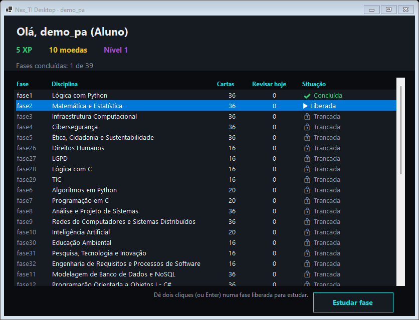
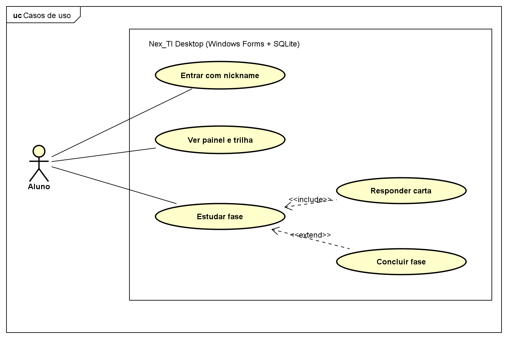
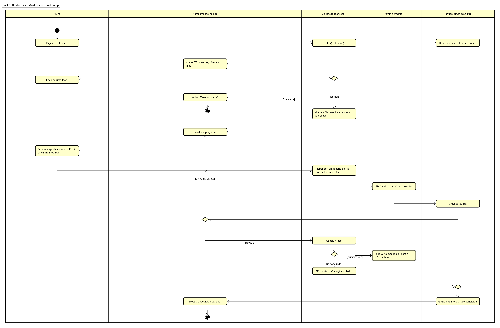
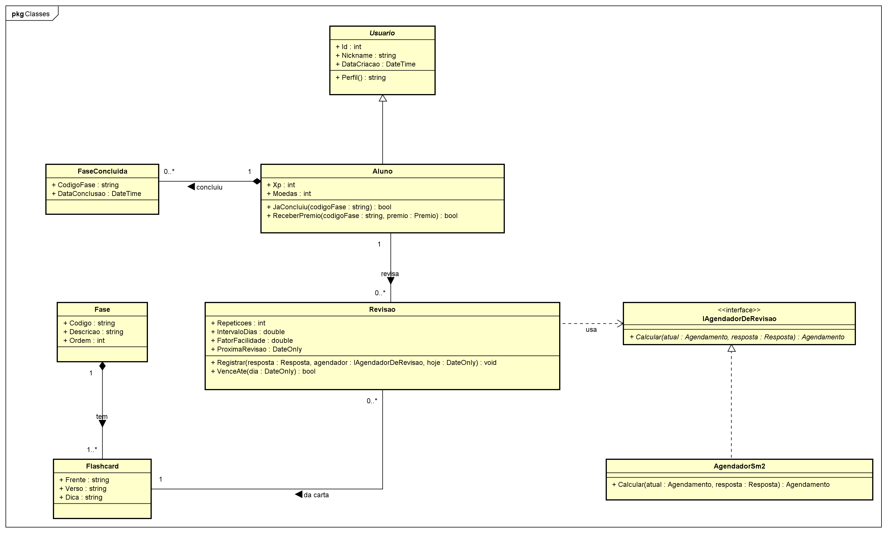
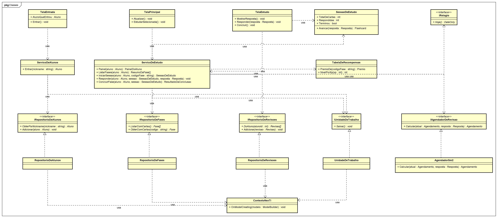
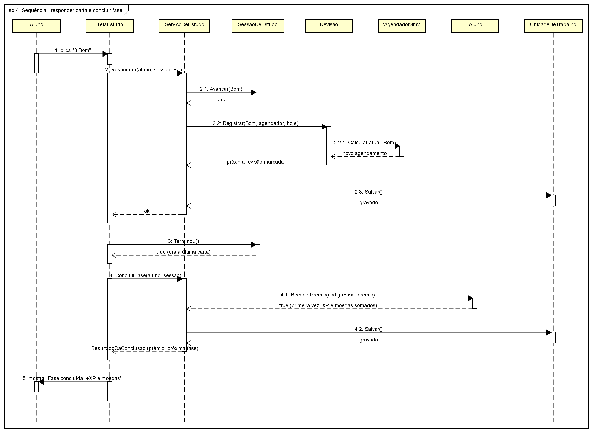
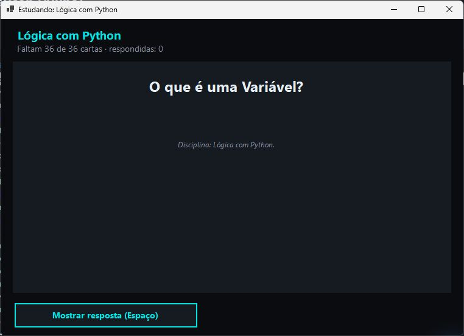

Uma aplicação desktop pequena e organizada: flashcards com revisão espaçada.
DevTime
Gabriel Alves Moreira (H67HJI4) · Maciel Costa da Silva (R280985) · Maycon Douglas Inácio Silva (H719CD3)
Miguel Angel Fernandez Ortiz (H7858F9) · Rafael Mesquita (H6722I0)
github.com/MayconDIS/PIM_IV · sistema/apps/desktop

O aluno digita só o nickname. Os dados ficam no computador dele.
25 fases e 582 cartas sobre TI. Concluir uma fase libera a próxima.
O SM-2 decide quando cada carta volta. A fase dá XP e moedas só na primeira vez.
Windows Forms + .NET 10 + SQLite.

Ator: o Aluno.
Entrar com nickname, ver painel e trilha e estudar fase.
«include»: estudar uma fase sempre inclui responder cartas.
«extend»: concluir a fase só acontece quando a última carta é acertada.

Uma raia para o aluno e uma para cada camada.
O Aluno é um Usuario: herda o Id, o nickname e a data de criação.
class Aluno : Usuario
Usuario é abstrata; cada tipo diz o próprio perfil.
public abstract string Perfil { get; }
XP e moedas só mudam por ReceberPremio, que paga uma vez por fase.
public int Xp { get; private set; }
A revisão usa o contrato; o SM-2 é quem faz. Dá para trocar o algoritmo.
class AgendadorSm2 : IAgendadorDeRevisao

Herança: Aluno herda de Usuario.
Composição: o Aluno é dono das fases concluídas; a Fase, das cartas.
Revisao guarda o SM-2 de cada carta para cada aluno.
Interface: IAgendadorDeRevisao, implementada pelo AgendadorSm2.
As telas em Windows Forms: entrada, painel e estudo.
Telas/Os casos de uso: entrar, listar fases, estudar e concluir.
ServicoDeEstudoEntidades, a regra do SM-2 e as interfaces dos repositórios.
Entidades/ e Regras/O banco SQLite pelo EF Core: contexto, repositórios e migration.
ContextoNexTIRegra: cada camada só usa a de baixo. O Domínio não depende de ninguém, e a Aplicação conhece só as interfaces, sem saber que existe SQLite.

| Projeto | O que tem | Usa |
|---|---|---|
NexTI.Desktop.Apresentacao | As telas e o Program.cs, que liga as camadas | Aplicação e Infraestrutura |
NexTI.Desktop.Aplicacao | ServicoDeAlunos, ServicoDeEstudo e SessaoDeEstudo | Domínio |
NexTI.Desktop.Dominio | Entidades, SM-2 e interfaces | nenhum |
NexTI.Desktop.Infraestrutura | EF Core + SQLite: contexto, repositórios, migration e semente | Domínio |
NexTI.Desktop.Testes | 28 testes automáticos (xUnit) | Domínio, Aplicação e Infraestrutura |
Por quê: o compilador não deixa o Domínio usar a tela ou o banco. Os testes trocam o banco por um em memória sem mudar as regras.

A tela chama Responder no serviço.
O serviço tira a carta da fila, o AgendadorSm2 calcula a próxima revisão e a UnidadeDeTrabalho grava.
Era a última carta? ConcluirFase: o Aluno recebe XP e moedas se for a primeira vez.
ServicoDeEstudo.Responder()

Um arquivo de banco no computador do aluno, sem servidor.
A migration Inicial cria as 5 tabelas; a semente coloca as fases e as cartas.
Espaço mostra a resposta; 1 a 4 respondem Errei, Difícil, Bom e Fácil.
28
testes automáticos
4
camadas, uma por projeto
5
tabelas no SQLite
4
tipos de diagrama UML
Os testes conferem o SM-2, o prêmio uma vez só e o programa de ponta a ponta, com um banco SQLite em memória.
Perguntas?
github.com/MayconDIS/PIM_IV · sistema/apps/desktop